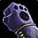

Handguards of Absolution
Handguards of AbsolutionHandguards of Absolution153 armor, 30 stamina, 31 intellect, 46 spell damage, 46 healing power, 19 spell hit rating (1.51%)Sockets yellow · Socket bonus 2 healing power, 2 spell damageTier set piece, Absolution Regalia. Bought with a token, never a raid drop
153 armor, 30 stamina, 31 intellect, 46 spell damage, 46 healing power,
19 spell hit rating (1.51%)
Sockets yellow · Socket bonus 2 healing power, 2 spell damage
Tier set piece, Absolution Regalia. Bought with a token, never a raid
drop
Shadow Priest
not yet decided
Constraints
Hit cap16%spells
Shadow Focus-10%
Gear needs6%
Entry7.3%clear
by 1.3%
Tier hands16.4%clear
by 10.4%
Tier hands and head14.5%clear
by 8.5%
No crit cap.
Part of this spec's damage is periodic, and periodic damage cannot crit
in this patch, so crit reaches less of its output than the character
sheet suggests.
Global cooldown floor at 50% spell haste, which nothing rostered reaches
from gear this phase.
Delta
Handguards of
AbsolutionHandguards of
Absolution153 armor, 30 stamina, 31
intellect, 46 spell damage, 46 healing power, 19 spell hit rating
(1.51%)Sockets yellow · Socket
bonus 2 healing power, 2 spell damageTier set piece, Absolution Regalia. Bought with
a token, never a raid drop in Shadow Priest terms
| Stat | Over Tier 5, Serpentshrine
Cavern
 Handguards of the AvatarHandguards of the Avatar140 armor, 31 stamina, 27 intellect, 25 spirit, 41 spell damage, 41 healing power, 18 spell hit rating (1.43%)Tier set piece, Avatar Regalia. Bought with a token, never a raid drop |
Over best pre-phase off-piece, Karazhan Handwraps of Flowing ThoughtHandwraps of Flowing Thought121 armor, 24 stamina, 22 intellect, 35 spell damage, 35 healing power, 14 spell hit rating (1.11%)Sockets yellow, blue · Socket bonus 3 spell hit ratingDrops from Attumen the Huntsman, Karazhan | ||
|---|---|---|---|---|
| Change | Converted | Change | Converted | |
| armor | +13 | +32 | ||
| stamina | -1 | +6 | ||
| intellect | +4 | +9 | ||
| spirit | -25 | 0 | ||
| spell damage | +5 | +11 | ||
| healing power | +5 | +11 | ||
| spell hit | +1 | +0.08% | +5 | +0.40% |
| Net Change | +0.08% spell hit | +0.40% spell hit | ||
No Tier 6 and no best Phase 3 off-piece is ranked for this spec in this
slot, so that comparison is not shown. A weapon the workbook does not
rank cannot be compared against, and a spec with no captured gear set
has nothing recorded to carry in.